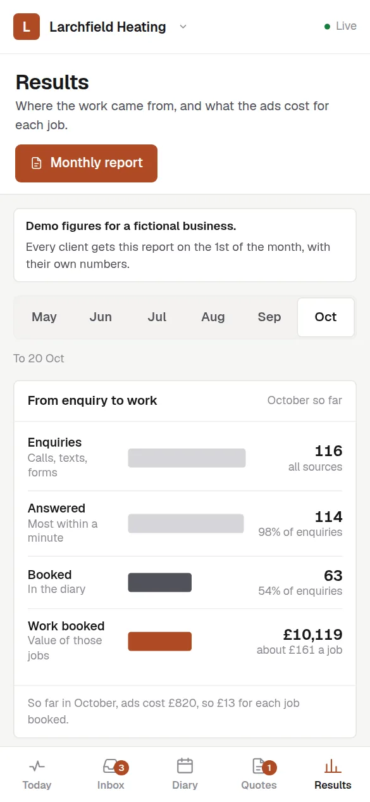

Puppy classes full before the first lesson.
A dog trainer’s website needs your courses and one-to-one sessions set out with what each one covers and who it is for, and the way you train, because that is what owners check first. It should let owners book and pay for a place on a course online, tell you about their dog before the first session, and join a waiting list when a course is full.

What should a website for dog trainers do?
- Each course and session with its age group or level, how many weeks it runs, where it meets and how many dogs are in the class.
- How you train, in your own words, so owners know what to expect before they book.
- Course places booked and paid for online, with a set number of spaces that closes when the class is full.
- A form about the dog before the first session: age, breed, health, vet and what the owner wants help with.
- A waiting list for full courses, so the next start date fills from people who have already asked.
How do customers choose a dog trainer?
Owners look for a trainer when a new puppy arrives or a problem gets too big to ignore, such as pulling, reactivity or recall. They want to know how you train and whether you can help with their dog, and puppy owners usually want a course that starts soon. The work leaks when course places are promised by message and never paid for, when a full class has no waiting list, and when a worried owner’s long enquiry waits days for an answer.
The three automations that matter most
Booking deposits
A course place held by a message is easy to drop, and payment at booking means the place goes to someone who will turn up every week.
How it worksReview requests
Asking at the end of a course catches owners when they can see the change in their dog, and those reviews are what the next worried owner reads.
How it worksMissed-call text-back
You cannot answer in the middle of a class, so the caller gets a text with your courses and booking link while they are still deciding.
How it worksTry it as a dog trainer
The live demos, set up for dog trainers with a made-up business. You play the customer, then see what you would see.
Builds that fit
Working builds for made-up businesses. Open any of them on your phone and use it.
Dog trainers: questions people ask
Can owners book a place on a puppy course online?
Yes. Each course has its start date, number of weeks and number of places, owners pay when they book, and the course closes itself when it is full and opens a waiting list for the next one.
Can I take enquiries about behaviour problems as well as bookings?
Yes. A one-to-one enquiry asks about the dog and the problem first, so you can read it before you reply and offer the right session, and each enquiry is tracked until it is booked or closed.
Does it work if I train at a hall, a field and in owners’ homes?
Yes. Group classes are booked into the venue and time for that course, while one-to-ones can be at a field or at the owner’s home, with the address taken at booking.
More in every question, answered.